Castle rooms: the sky castle and the magma keep
Every room of the Sky Ranger's castle and the Magma Knight's keep has a theme of its own: its own back wall, columns, floor and features under the ceiling, and a block coloured to match its back wall that lines its walls, so wall and back wall read as one. Which theme goes in which room is picked from the world seed, so it changes from world to world. You can mine the matching blocks and build with them. Rooms stay hidden in thick fog until you step inside. Pictures from a freshly made world, guards cleared, in full light.
The sky castle
Five floors on a cloud island at the far end of the sky realm.
| Room | Where it is |
|---|---|
| Entrance hall | The ground floor by the gate: the Hall of Winds or a sky garden. |
| Armory | The other half of the ground floor. |
| Library | The whole second floor. |
| Barracks | The third floor, split in two: two of quarters, observatory, garden and Hall of Winds. |
| Prison | The fourth floor, where the sky garden used to be. |
| Throne hall | The top floor: the Sky Ranger's throne in the far corner, ledges for your soldiers, and the treasure vault (gold-veined walls, coin shelves, an iron vault door) behind it. |
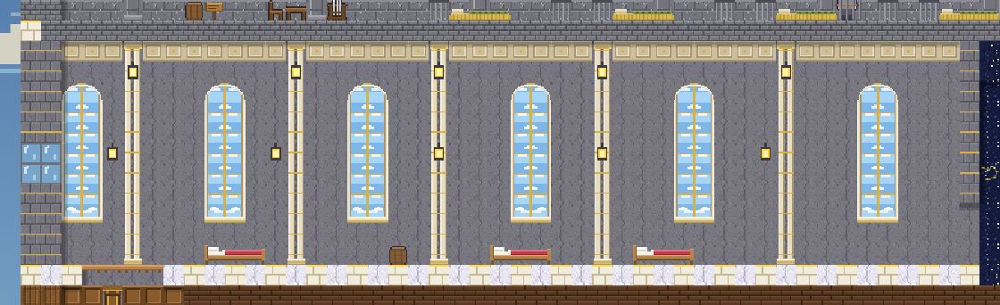
Hall of Winds
Tall windows full of sky and drifting cloud between paired cream columns, a coffered band under the ceiling and lanterns on the columns. Floor of marble and sky brick; walls of wind marble.
Matching block:  Wind marble
Wind marble
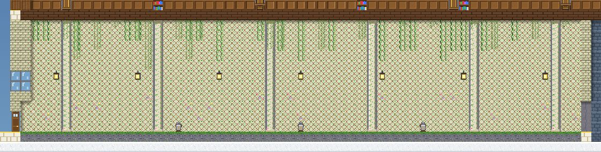
Sky garden
A trellis wall hung with vines and flowers, vine-wrapped columns and vines trailing from the ceiling. Moss floor; walls of garden stone.
Matching block:  Garden stone
Garden stone
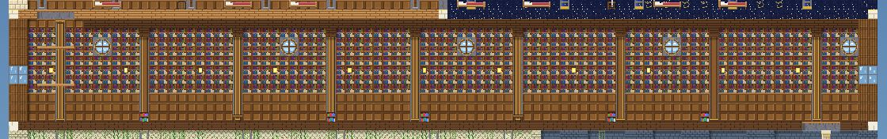
Library
Bookcases from floor to ceiling, wood panelling, round windows onto the sky, timber beams and struts under the ceiling. Dark plank floor; walls of library panelling.
Matching block: Library panelling
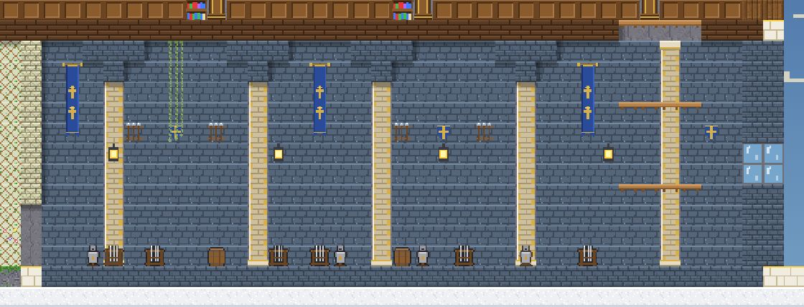
Armory
Steel-blue stone with spear racks, kite shields and long blue banners between square piers, corbels over the piers, and racks, stands and barrels on the floor. Floor and walls of steel brick.
Matching block:  Steel brick
Steel brick
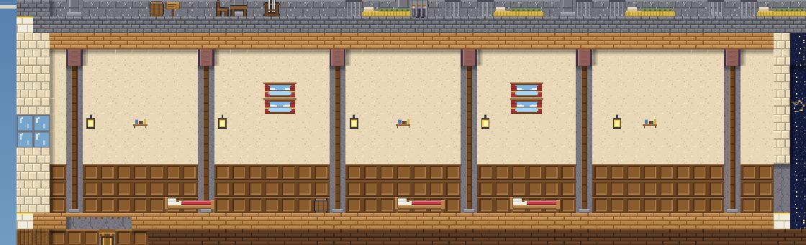
Quarters
Warm plaster above wood panelling, curtained windows, shelves, timber columns and beams. Plank floor; walls of warm plaster.
Matching block:
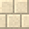
Warm plaster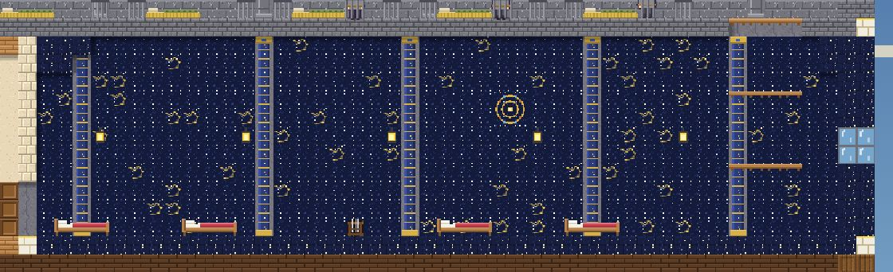
Observatory
A night sky with stars and constellations, a golden orrery and a domed ceiling over blue-and-gold columns. Floor and walls of starstone.
Matching block:  Starstone
Starstone
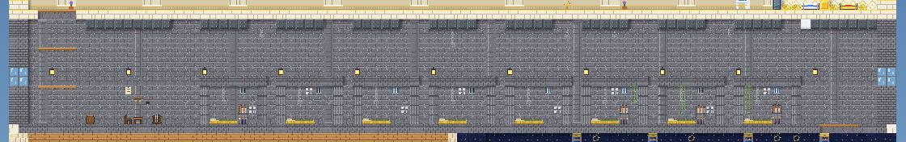
Prison
Grey stone with chains and rings, an iron-beamed ceiling and a row of barred cells, each with a straw bed, shackles, tally marks, a little barred window and an iron door. A guard post with a table, a chair, a weapon rack, a key ring and a lever. Up to five prisoners wait in the cells. Floor and walls of prison stone.
Matching block:  Prison stone
Prison stone
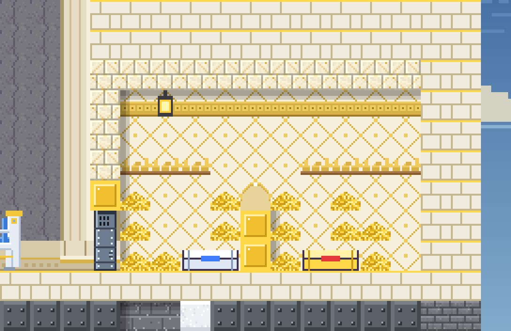
Treasure vault
A six-block-high vault behind the throne: gold-veined walls with a gold frieze, shelves of coins and ingots, an arch over a gold pedestal, gold piles and two sealed chests that open once the Sky Ranger falls, behind an iron vault door.
Matching block:  Gold-veined marble
Gold-veined marble
The sky prison
The prison has a row of barred cells, each with a straw bed, shackles on the wall, tally marks, a little barred window and an iron door, and a guard post with a table, a chair, a weapon rack, a key ring and a lever. Up to five prisoners wait in the cells (about half the cells hold one). Talk to a prisoner once the guards in the prison are down, or after the Sky Ranger has fallen: a captured soldier joins your party (or heads to your village if your party is full), and a captured villager gives you a few coins and heads to your village as a wanderer looking for work.
The magma keep
A maze of eighteen rooms on three levels beside the throne room, on the floor of the magma realm.
| Room | Where it is |
|---|---|
| Upper halls | Six rooms on the upper level, each one of the themes below, never the same one twice side by side. |
| Main halls | Six rooms on the gate level, the same way. |
| Dungeon cells | Six low rooms under the main halls: mostly cell blocks, with cisterns, ruins, shrines and smithies. |
| Throne room | The Magma Knight's hall beside the maze, reached from the upper level: wide three-part columns, a high gallery, tall glowing windows, a great window behind the throne and ledges for your soldiers. |
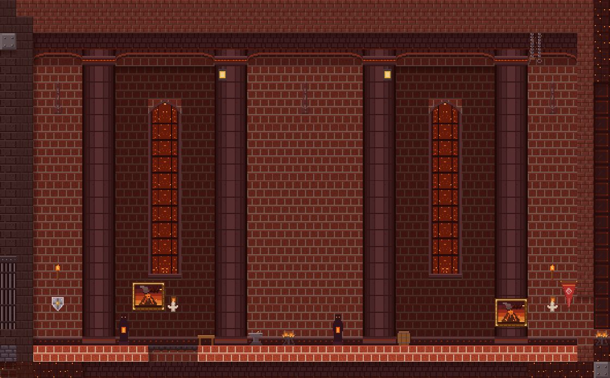
Great arcade
A great arcade: round columns under pointed arches, deep recesses with tall glowing windows, hanging chains and a trim along the floor. Walls of keep brick.
Matching block:  Keep brick
Keep brick
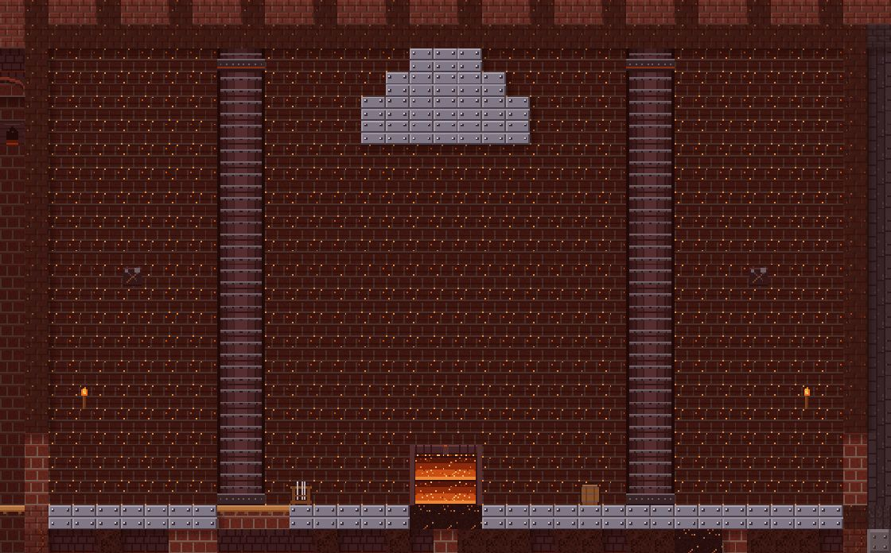
Smithy
Soot-black walls, iron columns, tools on the wall, a glowing hearth set into the floor under an iron hood. Iron plate floor; walls of soot brick.
Matching block:  Soot brick
Soot brick
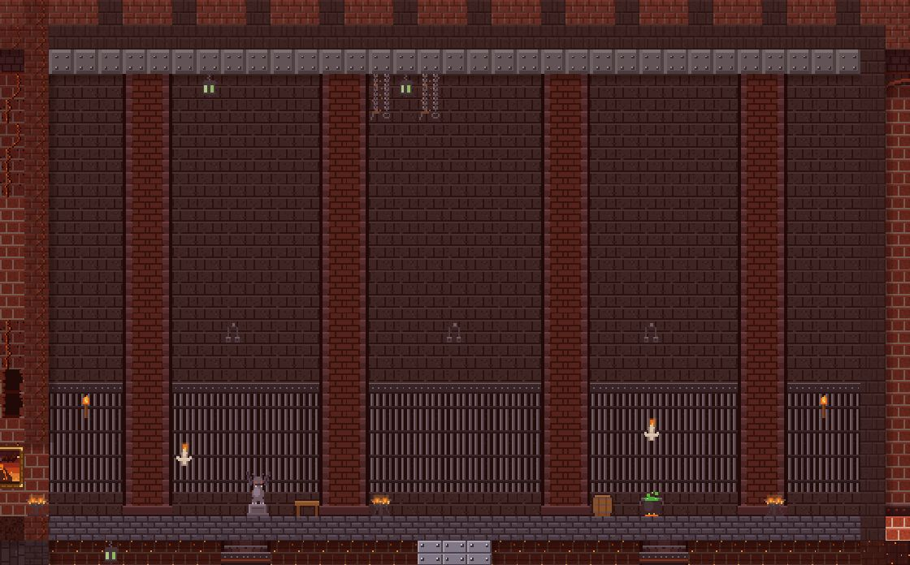
Cell block
Barred cells along the wall with riveted lintels and shackles, square piers and a low iron ceiling. Deep stone floor; walls of cell stone.
Matching block:
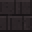
Cell stone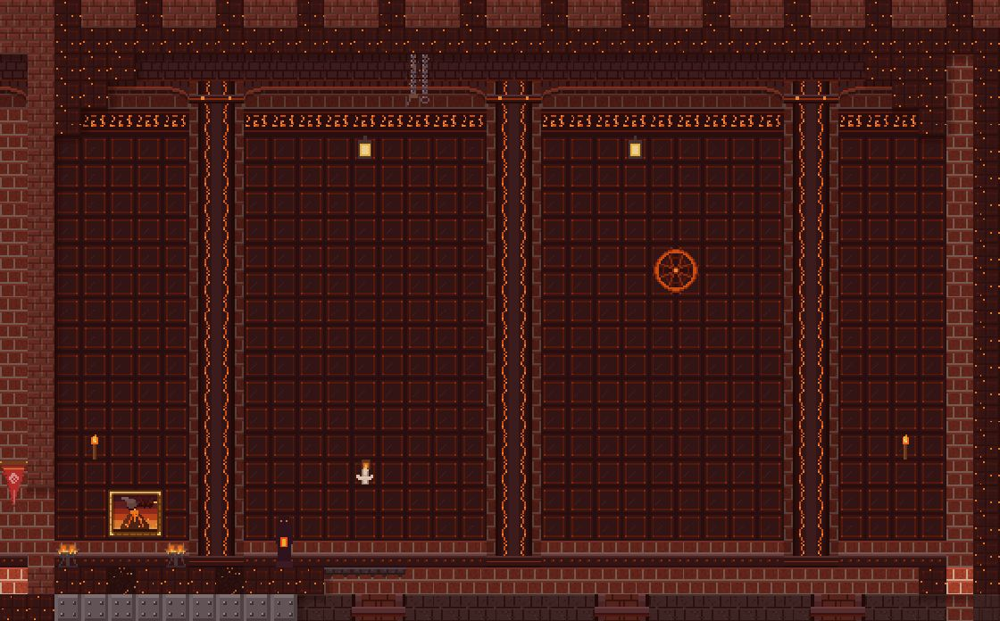
Ember shrine
Obsidian panels, a great glowing sigil, a band of runes, veined columns under arches and stepped corbels in the corners. Floor of obsidian and ember stone; walls of obsidian panel.
Matching block:
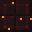
Obsidian panel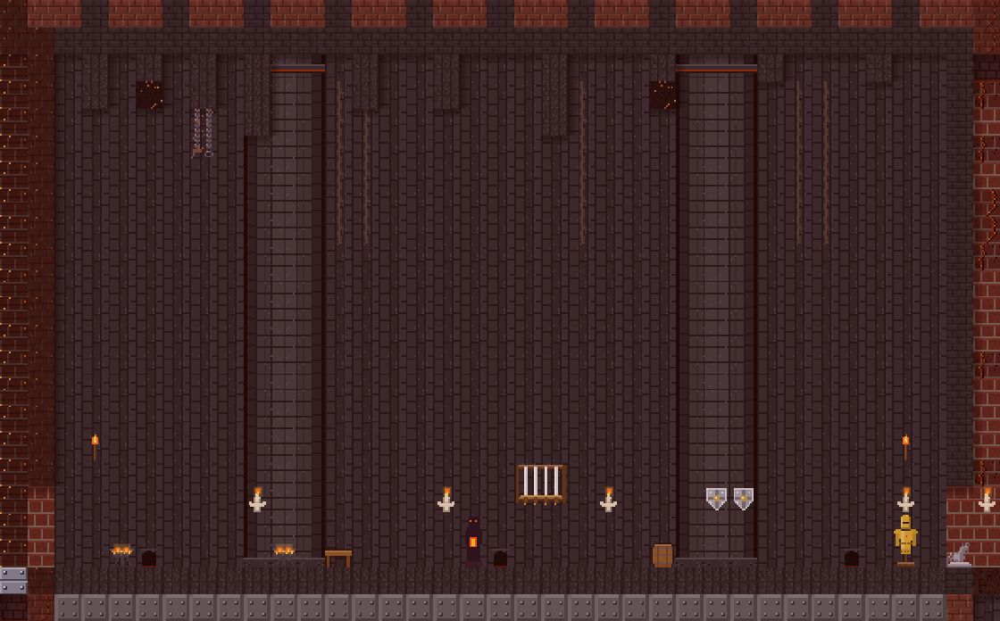
Basalt cistern
Basalt walls streaked with water stains, drains in the floor, hexagonal columns and basalt drips from the ceiling, some glowing at the tip. Basalt floor; walls of basalt brick.
Matching block:  Basalt brick
Basalt brick
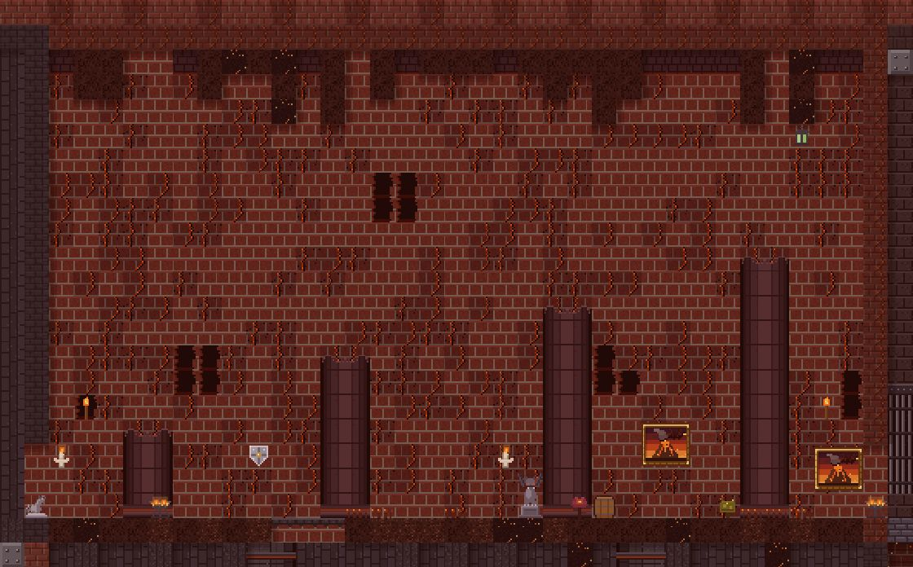
Collapsed hall
A collapsed hall: cracked walls with holes, broken columns, a ceiling coming down in scoria and ember stone, and rubble on the floor. Walls of cracked keep brick.
Matching block:  Cracked keep brick
Cracked keep brick
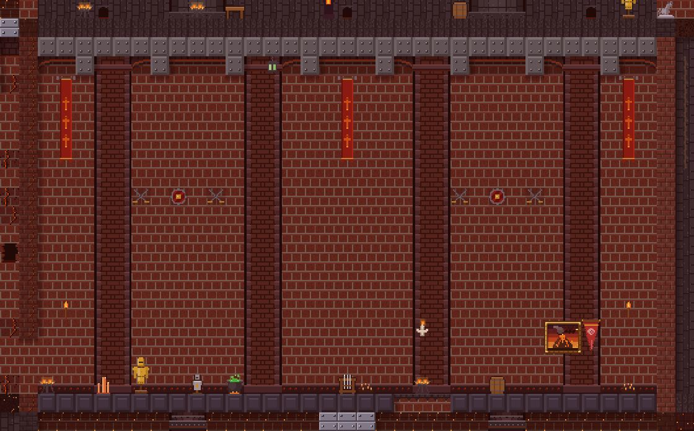
Armory
Shields, crossed blades and hanging banners between piers under pointed arches, an iron ceiling with struts. Deep trim floor; walls of keep brick.
Matching block:  Keep brick
Keep brick